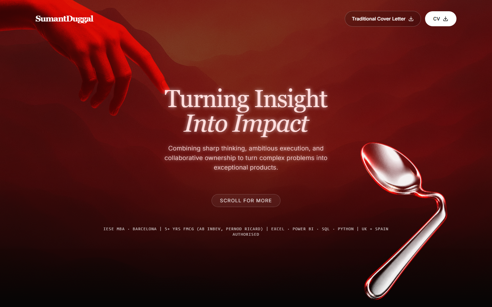

Interactive application
A digital cover letter for the Bending Spoons Graduate Product Manager application.
Across five-plus years in FMCG, I kept looking past my remit for the problem that actually mattered and building something to solve it - from a churn model and a self-organising hitlist to DraftVision, an industry-first operations platform. Investigate, build, execute, iterate: before I had those words for it, that was already the work I gravitated to.
I do not want to diagnose a problem and hand it off. I want to own a product, operate it for the long term, and keep improving it with the business consequences sitting on my own desk. That is exactly why Bending Spoons pulls at me.
